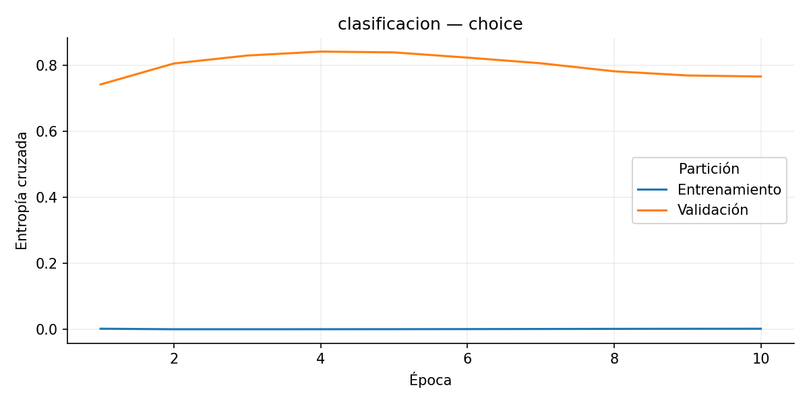
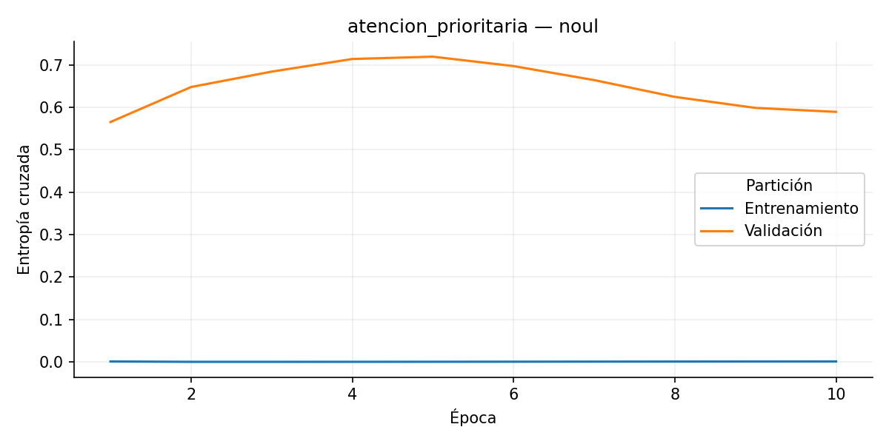
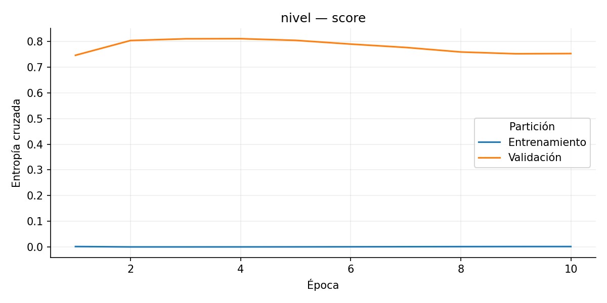
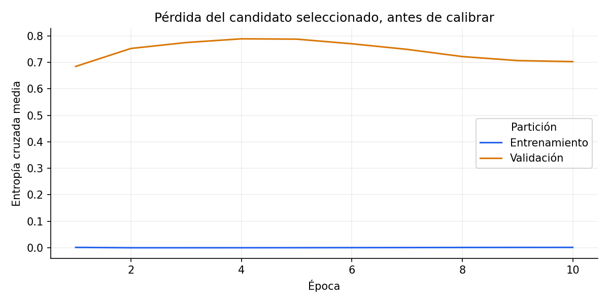
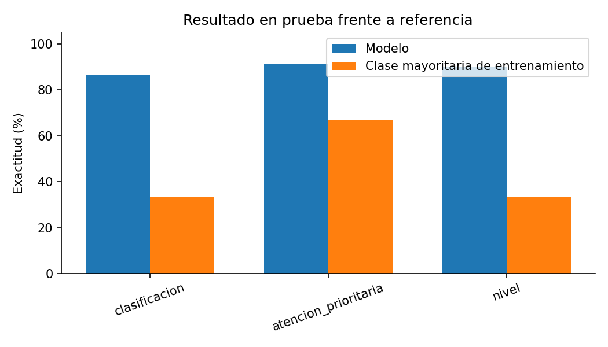
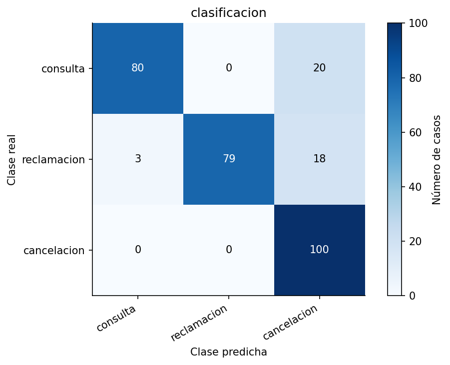
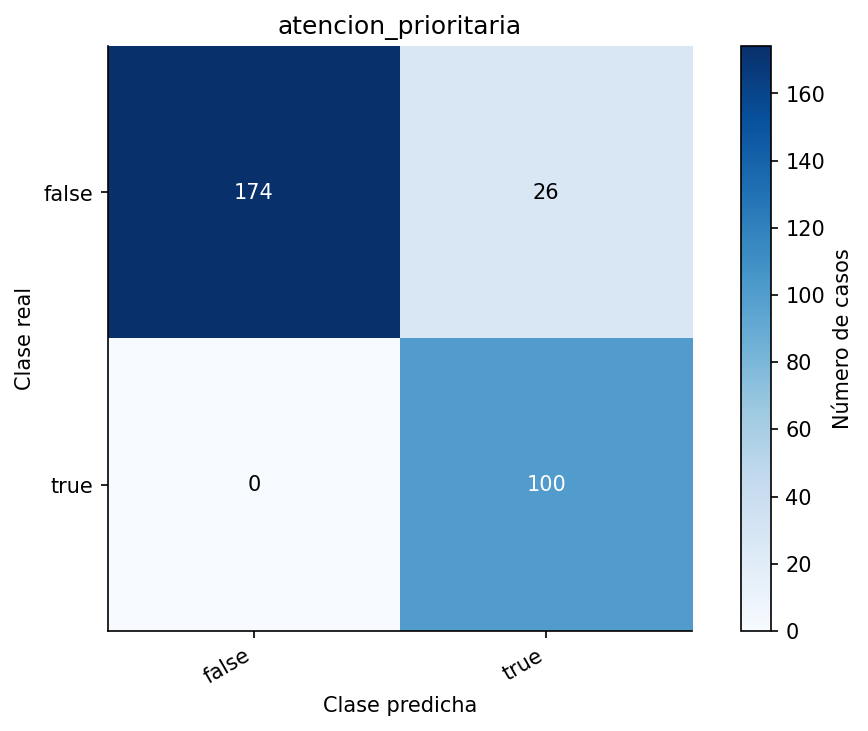
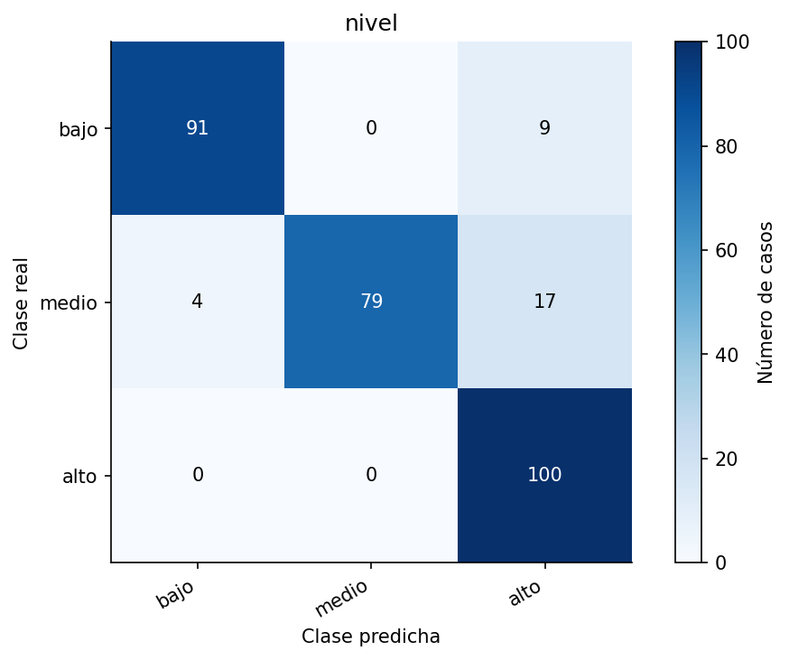

Cerebro de decisiones: Comercio: triaje de consultas y reclamaciones
Prueba con 300 casos. Pérdida media después de calibrar: 0.29072.
Estos datos proceden del generador sintético. Se reservan expresiones diferentes por partición, pero comparten las reglas del generador. No acreditan rendimiento en una industria real.
La prueba funcional confirma que el modelo guardado conserva sus predicciones al recargarlo. La exactitud indica cuántas etiquetas coincide con los datos; no prueba que las acciones causen un resultado favorable.
Pregunta
Exactitud
Referencia
Diferencia
Loss
¿Cuál es la necesidad principal del cliente?
86.3%
33.3%
+53.0 pp
0.3561
¿El caso requiere atención prioritaria según los datos aportados?
91.3%
66.7%
+24.7 pp
0.1937
¿Qué nivel de atención corresponde al caso?
90.0%
33.3%
+56.7 pp
0.3223
Choice, Score y Noul
Choice elige una opción. Score estima una posición entre 0 y el último nivel de la rúbrica; admite decimales. Noul estima la probabilidad de que una afirmación sea verdadera: 0,5 indica ambigüedad, no un grado intermedio.
Confidence usa 1 menos la entropía normalizada. No es probabilidad de acierto ni la fórmula privada de Jev. La revisión conserva el umbral min_probability sobre la opción más probable. Las matrices de Score comparan el nivel más probable; MAE evalúa el score continuo. Brier y loss: menor es mejor.
Pregunta
Tipo
Loss
Brier
Lectura
clasificacion
choice
categorical_cross_entropy: 0.35613
0.20203
Brier multiclase: suma de errores cuadráticos por caso.
atencion_prioritaria
noul
binary_cross_entropy: 0.19374
0.06130
Brier binario: error cuadrático de la probabilidad de verdadero.
nivel
score
categorical_cross_entropy: 0.32228
0.16903
MAE de score: 0.2352; RMSE: 0.3945; MAE referencia: 0.6670

Pérdida de clasificacion por época, antes de calibrar.

Pérdida de atencion_prioritaria por época, antes de calibrar.

Pérdida de nivel por época, antes de calibrar.
Aprendizaje y evaluación

Una pérdida menor representa más probabilidad asignada a las etiquetas correctas. Una brecha creciente entre entrenamiento y validación puede indicar sobreajuste.

La referencia predice la clase más frecuente observada en entrenamiento. Ganarle es una comparación inicial, no una validación de producción.

Filas: etiquetas reales. Columnas: predicciones. Las celdas fuera de la diagonal son errores.

Filas: etiquetas reales. Columnas: predicciones. Las celdas fuera de la diagonal son errores.

Filas: etiquetas reales. Columnas: predicciones. Las celdas fuera de la diagonal son errores.
Interpretación en escenarios
Las acciones se proponen para el flujo de trabajo; no se ejecutan. Los criterios y preguntas proceden del contrato y no son explicaciones causales aprendidas.
Estoy comparando opciones: ¿pueden explicar las características?
contexto
Solicitud operativa de Comercializadora Castro S.Coop., referencia JS-3477.
¿Cuál es la necesidad principal del cliente? Solicita información del producto.. Probabilidad de la opción: 80.9%; confianza de distribución: 43.5%. ¿El caso requiere atención prioritaria según los datos aportados? Probabilidad de que la afirmación sea verdadera: 1.8%. Cerca de 0,5 indica ambigüedad, no intensidad. ¿Qué nivel de atención corresponde al caso? Posición en la rúbrica: 0.179 de 2; confianza de distribución: 57.4%.
Solicitud operativa de Hermanos Ochoa S.L.N.E, referencia no-4070.
¿Cuál es la necesidad principal del cliente? Reclama un problema con su compra.. Probabilidad de la opción: 100.0%; confianza de distribución: 100.0%. ¿El caso requiere atención prioritaria según los datos aportados? Probabilidad de que la afirmación sea verdadera: 0.2%. Cerca de 0,5 indica ambigüedad, no intensidad. ¿Qué nivel de atención corresponde al caso? Posición en la rúbrica: 1.000 de 2; confianza de distribución: 100.0%.
No envíen el producto: deseo dejar sin efecto el pedido.
contexto
Solicitud operativa de Compañía Marco S.Coop., referencia ue-2094.
¿Cuál es la necesidad principal del cliente? Expresa intención de cancelar la compra.. Probabilidad de la opción: 99.5%; confianza de distribución: 97.0%. ¿El caso requiere atención prioritaria según los datos aportados? Probabilidad de que la afirmación sea verdadera: 99.7%. Cerca de 0,5 indica ambigüedad, no intensidad. ¿Qué nivel de atención corresponde al caso? Posición en la rúbrica: 1.989 de 2; confianza de distribución: 96.5%.
Estoy comparando opciones: ¿pueden explicar las características?
contexto
Solicitud operativa de Torrents y Páez S.L., referencia ma-3286.
¿Cuál es la necesidad principal del cliente? Solicita información del producto.. Probabilidad de la opción: 59.2%; confianza de distribución: 29.0%. ¿El caso requiere atención prioritaria según los datos aportados? Probabilidad de que la afirmación sea verdadera: 26.2%. Cerca de 0,5 indica ambigüedad, no intensidad. ¿Qué nivel de atención corresponde al caso? Posición en la rúbrica: 0.606 de 2; confianza de distribución: 35.6%.
Solicitud operativa de Comercializadora TQ S.A., referencia nW-6483.
¿Cuál es la necesidad principal del cliente? Reclama un problema con su compra.. Probabilidad de la opción: 98.5%; confianza de distribución: 91.8%. ¿El caso requiere atención prioritaria según los datos aportados? Probabilidad de que la afirmación sea verdadera: 0.4%. Cerca de 0,5 indica ambigüedad, no intensidad. ¿Qué nivel de atención corresponde al caso? Posición en la rúbrica: 0.992 de 2; confianza de distribución: 89.7%.